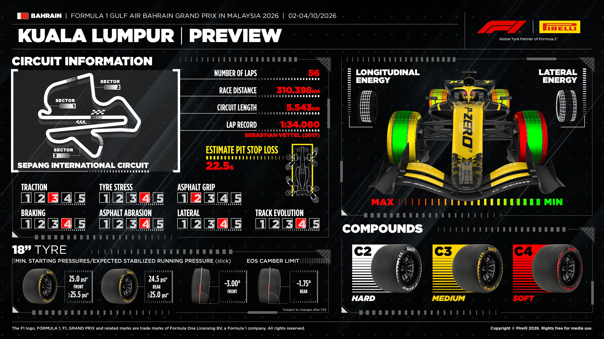
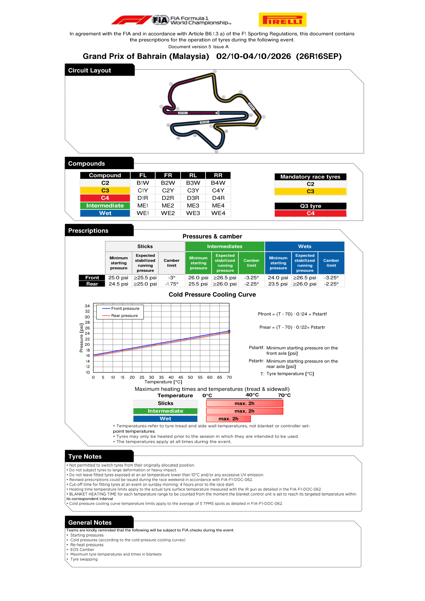

Tyres & Strategy
Compound allocation, degradation and the strategic shape of the race.
Race tyre availability
No verified pre-race set inventory has been collected for this weekend. These charts normally appear after qualifying, not with the earlier compound nomination. A missing chart is not proof of non-publication, and no zero counts or FastF1-derived inventory are substituted.
Source discovery checked 2026-10-03T15:30:26+00:00.
FIA official tyre documents
Official source; curated transcription may await review. Linked PDFs are the authority. Discovery does not extract or verify numeric values, and does not replace the curated material below.
Last successful FIA document discovery: 2026-10-03T15:29:48.683233+00:00. This is retrieval time, not issue time; newer revisions may exist.
What this circuit does to a tyre
Sepang's asphalt is abrasive. Pirelli reports that the Turns 6–12 section was resurfaced in 2023, with further work around Turn 9, and that additional levelling and cleaning took place from early September 2026. Despite that, Pirelli says the overall surface characteristics remain similar to 2017. Its current event poster rates tyre stress and abrasion 4/5, updating the earlier August assessment of medium relative stress. The C2/C3/C4 selection aims to reduce the lap-time differential between one- and two-stop strategies; 2026 degradation remains unmeasured until the weekend.
Why it matters here
Sepang's long straights into heavy braking zones have historically supported multi-lap passing. The Formula1.com circuit guide identifies four 2026 Straight Mode zones: the start/finish straight and between Turns 3–4, 8–9 and 14–15. Straight Mode is separate from electrical Overtake. The FIA's 1 October Circuit Map v4 marks four Straight Mode zones and one Overtake activation line; its separate power-unit map still marks the absolute Overtake line distances TBC.
Where passing is hard, strategy and the undercut decide the race; where it is easy, teams can afford to run longer and recover track position on merit.
Pirelli's event preview

FIA tyre prescriptions — page 2

Mandatory race tyres: C2 and C3. Q3 tyre: C4. The compounds are C2 Hard, C3 Medium and C4 Soft; these nominations are not a driver-by-driver new/used race-set inventory.
| Tyre type | Axle | Minimum starting pressure | Expected stabilized running pressure | Camber limit |
|---|---|---|---|---|
| Slick | Front | 25.0 psi | ≥25.5 psi | −3° |
| Slick | Rear | 24.5 psi | ≥25.0 psi | −1.75° |
| Intermediate | Front | 26.0 psi | ≥26.5 psi | −3.25° |
| Intermediate | Rear | 25.5 psi | ≥26.0 psi | −2.25° |
| Wet | Front | 24.0 psi | ≥26.5 psi | −3.25° |
| Wet | Rear | 23.5 psi | ≥26.0 psi | −2.25° |
Cold-pressure cooling curve
- Front: Pfront = (T − 70) × 0.124 + Pstart,front.
- Rear: Prear = (T − 70) × 0.122 + Pstart,rear.
- T is tyre tread/sidewall temperature in °C; Pstart is the minimum starting pressure for that axle.
Tyre heating and verification
- Maximum tyre heating time is 2 hours; the FIA notes refer to tread and sidewall temperatures, not blanket or controller set-points.
- Slicks and intermediates: maximum 70°C; wets: maximum 40°C.
- Starting pressure, cold-pressure cooling curves, re-heat pressures, EOS camber and tyre temperature/time in blankets are listed for FIA checks.
- These prescriptions do not supply a race-set count; the shared inventory section reports the latest source status separately.
Source: FIA competition notes — Pirelli preview, page 2; visually read from the original page screenshot. Pirelli's full Formula1.com infographic remains above and is not replaced by this FIA table.
What the full Pirelli poster tells us
The preview estimates 22.5 seconds pit-stop loss, not stationary service time. Its five-point ratings are traction 3, braking 4, tyre stress 4, asphalt abrasion 4, asphalt grip 2, lateral demand 4 and track evolution 4. These event-preview ratings supersede the earlier August description of medium relative stress. Thermal management on both axles and low initial grip are the main preparation questions.
Strategy before practice: prepare one- and two-stop scenarios, but do not borrow Baku's low-wear windows or label an invented stop lap as Pirelli guidance. No event-specific race-strategy window or post-qualifying remaining-set chart was found in this 1 October pre-practice review. Both need checking again after running; the source-linked preview above is not a race-set inventory.